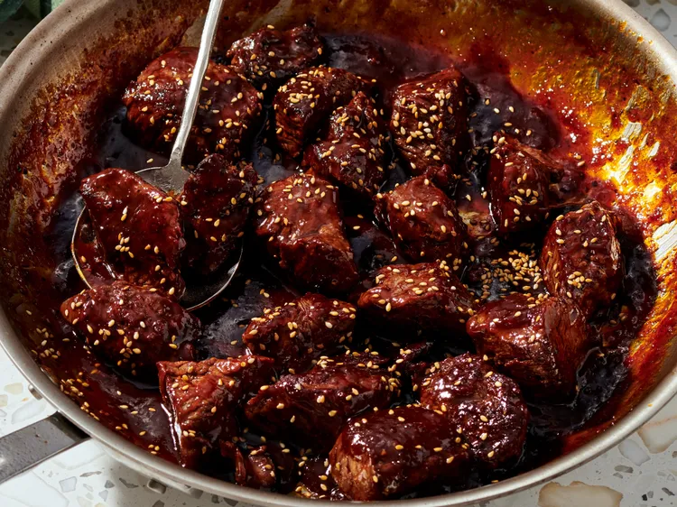

How to make Korean-Style Sweet and Spicy Steak Bites

Instructions
- Prep Time: 15 Minutes
- Cook Time: 15 Minutes
- Total Time: 30 Minutes
- Serving Size: 6
Ingredients
- 1 1/2 pounds beef tenderloin, cut into 1 1/2-inch pieces
- 1/2 teaspoon freshly ground black pepper
- 1/4 cup maple syrup
- 1/4 cup low-sodium soy sauce
- 1 1/2 tablespoons gochujang chili paste
- 1 tablespoon rice vinegar
- 3 cloves garlice, grated
- 1 teaspoon sesame oil
- 1 tablespoon cornstarch
- 1 tablespoon water
- 2 teaspoons grapeseed oil
- 1/2 teaspoon toasted sesame seeds
Directions
- Pat steak pieces dry with paper towels. Season with black pepper; set aside.
- Whisk maple syrup, soy sauce, gochujang, rice vinegar, and garlic together in a small bowl. In a separate little bowl, mix cornstarch with water until completely smooth. Set aside.
- Heat oil in a large skillet over high heat. Add steak pieces in a single layer, and sear for 1 to 2 minutes per side. Remove steak bites and set aside.
- Turn heat down to medium-low. Pour maple-gochujang mixture into the same skillet. Let it gently bubble for about 1 minute. Whisk in the cornstarch slurry and cook for another 30 to 60 seconds, stirring constantly.
- Turn heat to low and return steak bites to the skillet. Toss bites through the glaze for 30 to 60 seconds. Turn off heat, drizzle in sesame oil, and toss once more. Sprinkle with sesame seeds.
Return to Recipe List